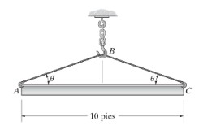
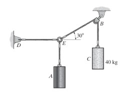
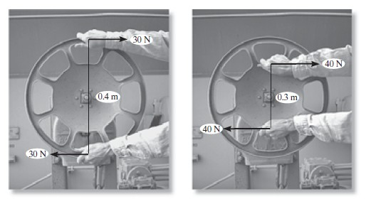
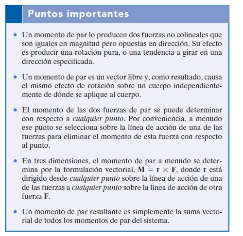
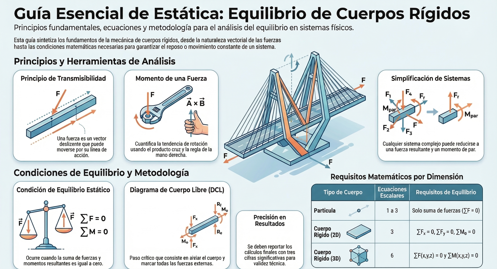
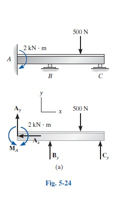

Unidad 3: Equilibrio de cuerpo rígido
Condiciones de equilibrio, ecuaciones de equilibrio, momento de una fuerza y restricciones
Contenido de la unidad
- 3.1 Condiciones de equilibrio de cuerpos rígidos
- 3.1.1 Fuerzas internas y externas
- 3.1.2 Principios de transmisibilidad
- 3.2 Ecuaciones de equilibrio
- 3.2.1 Ecuaciones para diferentes sistemas de fuerzas
- 3.2.2 Momento de una fuerza
- 3.2.3 Momento de una fuerza respecto a un eje
- 3.2.4 Sistemas equivalentes
- 3.3 Restricciones de un cuerpo rígido
3.1 Condiciones de equilibrio de cuerpos rígidos
Un cuerpo rígido está en equilibrio cuando la resultante de todas las fuerzas externas y la resultante de los momentos (respecto a cualquier punto) son nulas. Así se garantiza que no haya traslación ni rotación. Estas condiciones se expresan mediante las ecuaciones de equilibrio que veremos en la sección 3.2.
En esta sección desarrollaremos las condiciones necesarias y suficientes para lograr el equilibrio del cuerpo rígido que se muestra en la figura 5-1a. Este cuerpo está sometido a un sistema de fuerzas externas y momentos de par que es el resultado de los efectos de fuerzas gravitatorias, eléctricas, magnéticas o de contacto causadas por cuerpos adyacentes. Las fuerzas internas causadas por interacciones entre partículas dentro del cuerpo no se muestran en la figura porque estas fuerzas ocurren en pares colineales iguales pero opuestos y por consiguiente se cancelarán, lo cual es una consecuencia de la tercera ley de Newton.

Un cuerpo rígido es un modelo idealizado en el que se asume que las distancias entre cualquier par de puntos del cuerpo permanecen constantes, es decir, no se deforma bajo la acción de las fuerzas aplicadas. A diferencia de la partícula —donde todas las fuerzas son concurrentes—, en un cuerpo rígido las fuerzas actúan en distintos puntos, por lo que además de trasladarse, el cuerpo puede rotar. Esto exige condiciones de equilibrio más completas que las estudiadas para partículas.
Objetivo de aprendizaje: al finalizar el tema, el estudiante será capaz de enunciar las condiciones necesarias y suficientes para el equilibrio de un cuerpo rígido, distinguir los elementos de dos y tres fuerzas, y evaluar la determinación e inestabilidad estática de un sistema de apoyos.
2. Del equilibrio de la partícula al equilibrio del cuerpo rígido
En el equilibrio de una partícula, bastaba con garantizar que no existiera aceleración lineal:
ΣF⃗ = 0
En un cuerpo rígido, dado que las fuerzas no son concurrentes, es posible que ΣF⃗ = 0 se cumpla y, sin embargo, el cuerpo rote bajo el efecto de un par de fuerzas. Por ello, se requiere una segunda condición independiente, asociada a la ausencia de aceleración angular:
ΣM⃗ = 0
Las dos condiciones deben cumplirse simultáneamente para garantizar el equilibrio completo (traslacional y rotacional) de un cuerpo rígido.
3. Condiciones necesarias y suficientes de equilibrio
3.1 Formulación vectorial general
ΣF⃗ = 0
ΣM⃗O = 0
La segunda ecuación debe cumplirse respecto a cualquier punto O que se elija; si se cumple respecto a un punto, se cumple automáticamente respecto a cualquier otro, siempre que también se cumpla ΣF⃗ = 0.
3.2 Condiciones escalares en dos dimensiones (2D)
ΣFx = 0
ΣFy = 0
ΣMO = 0
Estas tres ecuaciones escalares independientes constituyen las condiciones de equilibrio de un cuerpo rígido sometido a un sistema de fuerzas coplanares.
Formas equivalentes (útiles según la geometría del problema):
- Dos fuerzas y un momento: ΣFx = 0, ΣFy = 0, ΣMA = 0
- Una fuerza y dos momentos: ΣFx = 0, ΣMA = 0, ΣMB = 0 (válida si la línea AB no es perpendicular al eje x)
- Tres momentos: ΣMA = 0, ΣMB = 0, ΣMC = 0 (válida si A, B y C no son colineales)
3.3 Condiciones escalares en tres dimensiones (3D)
ΣFx = 0 ΣFy = 0 ΣFz = 0
ΣMx = 0 ΣMy = 0 ΣMz = 0
Seis condiciones escalares independientes, correspondientes a las tres posibles traslaciones y las tres posibles rotaciones del cuerpo en el espacio.
4. Grados de libertad y su relación con las condiciones de equilibrio
Cada ecuación de equilibrio disponible corresponde a la restricción de un posible movimiento rígido del cuerpo:
| Movimiento posible | Ecuación que lo restringe (2D) |
|---|---|
| Traslación horizontal | ΣFx = 0 |
| Traslación vertical | ΣFy = 0 |
| Rotación en el plano | ΣMO = 0 |
Un cuerpo rígido libre en el plano tiene tres grados de libertad (dos traslaciones y una rotación); en el espacio tiene seis (tres traslaciones y tres rotaciones). Las condiciones de equilibrio son, precisamente, tantas como grados de libertad existen, ya que cada una anula la posibilidad de movimiento en esa dirección o sentido de rotación.
5. Elementos sometidos a dos fuerzas (miembros de dos fuerzas)
Un caso particular de gran importancia práctica es el de un cuerpo rígido sobre el cual actúan fuerzas aplicadas únicamente en dos puntos (sin cargas intermedias ni momentos aplicados). Para que dicho elemento esté en equilibrio, ambas fuerzas deben cumplir:
- Tener la misma magnitud
- Actuar sobre la misma línea de acción (la recta que une los dos puntos de aplicación)
- Tener sentidos opuestos
Consecuencia práctica fundamental: en un elemento de dos fuerzas, la línea de acción de dichas fuerzas queda determinada por la geometría del elemento (la línea que une sus dos puntos de conexión), sin importar la forma real de la pieza. Este principio es la base del análisis de armaduras, donde cada barra se trata como un elemento de dos fuerzas (a tensión o a compresión).
6. Elementos sometidos a tres fuerzas (miembros de tres fuerzas)
Cuando un cuerpo rígido está sometido a exactamente tres fuerzas (y ningún momento aplicado directamente), el equilibrio exige que dichas fuerzas sean:
- Concurrentes (sus líneas de acción se cruzan en un mismo punto), o bien
- Paralelas entre sí (caso límite, equivalente a que el punto de concurrencia se ubique en el infinito)
Este principio —conocido como el teorema de las tres fuerzas— es una herramienta gráfica muy poderosa: permite determinar la dirección de una fuerza desconocida trazando la intersección de las otras dos líneas de acción conocidas, sin necesidad de plantear ecuaciones algebraicas.
7. Determinación, indeterminación e inestabilidad estática
El número de reacciones desconocidas que aportan los apoyos de un cuerpo rígido debe compararse con el número de ecuaciones de equilibrio disponibles para clasificar el problema:
7.1 Cuerpo estáticamente determinado (isostático)
r = n
donde r es el número de reacciones desconocidas y n es el número de ecuaciones de equilibrio independientes (n = 3 en 2D, n = 6 en 3D). El problema puede resolverse completamente utilizando únicamente las ecuaciones de la estática.
7.2 Cuerpo estáticamente indeterminado (hiperestático)
r > n
Existen más reacciones que ecuaciones disponibles. Las ecuaciones de equilibrio son insuficientes; se requieren ecuaciones adicionales de compatibilidad de deformaciones, propias de la mecánica de materiales o del análisis estructural avanzado. El número de reacciones en exceso se conoce como grado de indeterminación.
7.3 Cuerpo estáticamente inestable
r < n
Existen menos reacciones que ecuaciones necesarias; el cuerpo tiene movimiento posible y no puede estar en equilibrio bajo cargas generales.
Inestabilidad geométrica (caso especial e importante): incluso cuando r = n, el cuerpo puede ser inestable si las reacciones están dispuestas de forma inadecuada, por ejemplo:
- Todas las reacciones son paralelas entre sí (no pueden equilibrar una fuerza aplicada perpendicular a ellas).
- Todas las reacciones son concurrentes en un mismo punto (no pueden equilibrar un momento respecto a ese punto).
Nota pedagógica: es fundamental transmitir que contar el número de incógnitas es solo el primer paso; la disposición geométrica de los apoyos es igualmente determinante para garantizar un equilibrio estable.
8. Ejemplo resuelto: verificación de determinación estática
Una viga plana está sostenida por un pasador en un extremo y un rodillo en el otro extremo.
Conteo de incógnitas:
- Pasador: 2 reacciones (Ax, Ay)
- Rodillo: 1 reacción (By)
- Total: r = 3
Ecuaciones disponibles en 2D: n = 3
Conclusión: r = n = 3, por lo tanto, la viga es estáticamente determinada, y sus reacciones pueden calcularse completamente mediante las tres ecuaciones de equilibrio.
9. Ejemplo resuelto: elemento de dos fuerzas en una estructura
En una armadura simple, una barra conecta dos nodos A y B mediante pasadores en ambos extremos, sin cargas aplicadas a lo largo de su longitud.
Aplicación del principio de la sección 5: al tratarse de un elemento sometido únicamente a dos fuerzas (una en cada nodo), dichas fuerzas deben actuar necesariamente a lo largo de la línea AB, con igual magnitud y sentidos opuestos. Esto significa que la barra trabaja exclusivamente a tensión (tirando de ambos nodos hacia el centro) o a compresión (empujando ambos nodos hacia afuera), sin posibilidad de flexión, lo cual simplifica enormemente el análisis de armaduras completas.
10. Errores comunes a reforzar en clase
- Aplicar solo dos de las tres ecuaciones de equilibrio en 2D, olvidando la ecuación de momentos.
- No verificar la determinación estática antes de intentar resolver el problema únicamente con estática (en un caso hiperestático, el sistema quedará indeterminado).
- Confundir un elemento de dos fuerzas con uno de múltiples fuerzas: solo aplica el principio de la sección 5 cuando las fuerzas actúan exclusivamente en dos puntos.
- Ignorar la inestabilidad geométrica cuando r = n, asumiendo automáticamente que el sistema está bien soportado por el solo hecho de que el conteo numérico coincide.
- Usar formas alternativas de las ecuaciones de equilibrio sin verificar sus condiciones de validez (por ejemplo, tomar dos momentos respecto a puntos alineados perpendicularmente al eje usado en la ecuación de fuerza, lo que genera ecuaciones dependientes).
11. Actividad sugerida para el aula
Ejercicio propuesto: Analice las siguientes configuraciones de apoyo para una viga plana y clasifique cada una como estáticamente determinada, indeterminada o inestable, justificando la respuesta:
- Un empotramiento en un extremo (sin apoyo en el otro extremo).
- Dos rodillos (uno en cada extremo).
- Un pasador en un extremo y un rodillo en el otro.
- Un pasador en un extremo y un empotramiento en el otro.
(Actividad ideal para discusión grupal, enfatizando tanto el conteo de reacciones como el análisis de la disposición geométrica de cada caso.)
12. Resumen de conceptos clave
| Concepto | Descripción |
|---|---|
| Condición general de equilibrio | ΣF⃗ = 0 y ΣM⃗ = 0 (ambas, simultáneamente) |
| Ecuaciones en 2D | ΣFx = 0, ΣFy = 0, ΣMO = 0 |
| Ecuaciones en 3D | 3 de fuerza + 3 de momento (6 en total) |
| Elemento de dos fuerzas | Fuerzas iguales, misma línea de acción, sentidos opuestos |
| Elemento de tres fuerzas | Fuerzas concurrentes o paralelas |
| Isostático | r = n |
| Hiperestático | r > n |
| Inestable | r < n, o disposición geométrica inadecuada aunque r = n |
Determine la longitud requerida para el cable de corriente alterna de la figura 3-8a, de manera que la lámpara de 8 kg esté suspendida en la posición que se muestra. La longitud no deformada del resorte AB es l'AB = 0.4 m, y el resorte tiene una rigidez de kAB = 300 N/m. pg.93
La caja de 200 kg que se muestra en la figura 3-7a está suspendida por las cuerdas AB y AC. Cada cuerda puede soportar una fuerza máxima de 10 kN antes de que se rompa. Si AB siempre permanece horizontal, determine el ángulo mínimo θ al que se puede suspender la caja antes de que una de las cuerdas se rompa.


Los principios que mantienen a los puentes en pie


3.1.1 Fuerzas internas y externas
Las fuerzas externas son las que ejercen otros cuerpos o el medio sobre el cuerpo en estudio (peso, reacciones, tensiones). Las fuerzas internas son las que mantienen unidas las partículas del cuerpo; en un cuerpo rígido ideal no provocan cambio en el movimiento. Para el equilibrio solo se consideran las fuerzas externas en el diagrama de cuerpo libre.
Toda fuerza que actúa sobre un sistema mecánico puede clasificarse, según su origen y su relación con el cuerpo analizado, en fuerza externa o fuerza interna. Esta distinción es uno de los conceptos más importantes de la mecánica, ya que determina qué fuerzas deben incluirse en un diagrama de cuerpo libre y sienta las bases para el análisis de estructuras, armaduras y elementos sometidos a carga (vigas, columnas, ejes).
2. Fuerza externa
Es aquella que proviene de un agente fuera del sistema analizado y actúa sobre él. Son responsables del comportamiento global del cuerpo: su movimiento, equilibrio o deformación como un todo.
Ejemplos:
- El peso de un cuerpo
- Las reacciones en los apoyos (pasador, rodillo, empotramiento)
- Cargas aplicadas directamente (una persona sobre una viga, el viento, la presión de un fluido)
- La tensión de un cable que conecta el sistema con algo externo a él
Característica clave: son las únicas que se incluyen al plantear las ecuaciones de equilibrio del cuerpo completo:
ΣF⃗ext = 0
ΣM⃗ext = 0
3. Fuerza interna
Es aquella que se genera entre las partes de un mismo sistema, como resultado de la interacción mutua al transmitir las cargas externas a través del material o de las conexiones del cuerpo.
Ejemplos:
- La fuerza que se transmite entre partículas adyacentes dentro de un sólido
- La fuerza axial (tensión o compresión) dentro de una barra de armadura
- Las fuerzas de corte y momentos flectores dentro de una viga
- La fuerza que un miembro estructural ejerce sobre otro en una conexión
Propiedad fundamental (3ª Ley de Newton): siempre aparecen en pares acción-reacción de igual magnitud, misma línea de acción y sentidos opuestos. Por eso, al analizar el sistema completo como un solo cuerpo rígido, las fuerzas internas se cancelan y no aparecen en sus ecuaciones de equilibrio.
4. La clasificación depende del sistema elegido
Este es el punto conceptual más importante del tema: una misma fuerza puede ser interna o externa según cómo se defina el sistema analizado.
Ejemplo: en una armadura completa:
- Si se analiza la armadura completa, las fuerzas entre barras en cada nodo son internas y no aparecen en su DCL; solo se incluyen reacciones y cargas externas.
- Si se aísla una sola barra, las fuerzas que las barras vecinas ejercían sobre ella pasan a ser externas para ese nuevo subsistema.
Idea central: «interna» y «externa» no son propiedades absolutas de una fuerza, sino relativas a la frontera del sistema que se decide aislar. Cada corte imaginario convierte fuerzas internas en externas para el subsistema resultante.
5. Método de secciones
Procedimiento para «revelar» fuerzas internas:
- Calcular primero las reacciones externas del cuerpo completo.
- Realizar un corte imaginario en el punto de interés, dividiendo el cuerpo en dos partes.
- Aislar una de las dos partes y dibujar su DCL, incluyendo las fuerzas externas conocidas y las fuerzas internas en el corte (ahora tratadas como externas de ese subsistema).
- Aplicar las ecuaciones de equilibrio para determinar las fuerzas internas desconocidas.
- (Verificación) Repetir con la otra mitad; los resultados deben coincidir en magnitud y ser opuestos en sentido.
6. Tipos de fuerzas internas en un elemento estructural
| Componente | Dirección | Efecto físico |
|---|---|---|
| Fuerza normal/axial (N) | Perpendicular a la sección | Tracción o compresión |
| Fuerza cortante (V) | Paralela al plano de la sección | Desliza una parte respecto a la otra |
| Momento flector (M) | Momento en la sección | Flexiona el elemento |
En un elemento de dos fuerzas, la fuerza interna se reduce solo a la componente axial N (tensión o compresión pura).
7. Ejemplo: barra de armadura (método de secciones)
Con las reacciones ya calculadas, se corta la armadura atravesando la barra de interés (ej. CD), se aísla el lado con menos incógnitas, y se representa FCD como fuerza axial (asumida a tensión). Al resolver con las ecuaciones de equilibrio: si FCD > 0 está a tensión; si es negativo, está a compresión.
8. Ejemplo: viga con carga puntual
Viga simplemente apoyada, longitud L, carga P en el centro. Reacciones: Ay = By = P/2.
Corte a distancia x < L/2, aislando el segmento izquierdo:
ΣFy = 0: V = P/2
ΣM = 0: M = (P/2) x
Es decir: cortante constante e igual a P/2, y momento flector que crece linealmente con x hasta el centro de la viga.
9. Errores comunes
- Incluir fuerzas internas en el DCL del sistema completo (deben cancelarse).
- Olvidar incluirlas al aislar una parte mediante un corte.
- No calcular primero las reacciones externas.
- Confundir el signo del resultado (negativo = compresión, no error).
- Olvidar verificar con acción-reacción en la sección opuesta.
10. Resumen
| Concepto | Descripción |
|---|---|
| Fuerza externa | De fuera del sistema; aparece en el equilibrio del cuerpo completo |
| Fuerza interna | Entre partes del sistema; se cancela al analizar el todo |
| Naturaleza relativa | Depende de la frontera del sistema elegido |
| Método de secciones | Corte imaginario que revela fuerzas internas |
| Componentes internas | Normal (N), cortante (V), momento flector (M) |
Video 3.1.1
3.1.2 Principios de transmisibilidad
El principio de transmisibilidad establece que el efecto de una fuerza sobre un cuerpo rígido no cambia si la fuerza se desplaza a lo largo de su línea de acción. Esto permite simplificar el diagrama de cuerpo libre y la aplicación de las condiciones de equilibrio sin alterar el resultado.
El principio de transmisibilidad es uno de los postulados fundamentales de la mecánica del cuerpo rígido. Establece las condiciones bajo las cuales una fuerza puede desplazarse a lo largo de su línea de acción sin alterar el efecto mecánico externo que produce sobre el cuerpo. Este principio simplifica notablemente el análisis de sistemas de fuerzas, ya que permite tratar una fuerza como un vector deslizante, en lugar de un vector fijo atado a un único punto de aplicación.
Objetivo de aprendizaje: al finalizar el tema, el estudiante será capaz de enunciar el principio de transmisibilidad, justificar su validez para cuerpos rígidos, identificar sus limitaciones, y aplicarlo correctamente en la simplificación de diagramas de cuerpo libre y en el cálculo de resultantes.
2. Enunciado del principio
«El estado de equilibrio (o de movimiento) de un cuerpo rígido no se altera si una fuerza que actúa sobre un punto dado del cuerpo se reemplaza por otra fuerza de la misma magnitud, dirección y sentido, pero que actúa en un punto diferente, siempre que ambas fuerzas tengan la misma línea de acción.»
En otras palabras, lo único que determina el efecto externo de una fuerza sobre un cuerpo rígido son tres características: magnitud, dirección y sentido, junto con su línea de acción; el punto específico de aplicación sobre esa misma línea resulta irrelevante para el análisis del cuerpo como un todo.
3. Concepto de vector deslizante
Como consecuencia directa del principio, una fuerza aplicada sobre un cuerpo rígido se representa matemáticamente como un vector deslizante (en contraste con un vector fijo):
- Vector fijo: su punto de aplicación es una característica esencial e inseparable del vector (por ejemplo, un vector de posición).
- Vector deslizante: puede trasladarse libremente a lo largo de su línea de acción sin cambiar su efecto (el caso de una fuerza actuando sobre un cuerpo rígido).
Esta propiedad es la que permite, por ejemplo, sumar gráficamente fuerzas mediante el polígono de fuerzas sin preocuparse por el punto exacto donde cada una está aplicada, siempre que se respete su línea de acción.
4. Justificación física del principio
El principio de transmisibilidad puede demostrarse a partir del concepto de que dos fuerzas iguales, opuestas y colineales, aplicadas sobre el mismo cuerpo, se cancelan mutuamente sin producir ningún efecto (ni traslación ni rotación).
Demostración conceptual:
Supóngase una fuerza F⃗ aplicada en el punto A de un cuerpo rígido, y se desea trasladarla a un punto B sobre la misma línea de acción.
- En el punto B, se agregan dos fuerzas adicionales, iguales y opuestas entre sí, ambas de magnitud igual a F y colineales con la fuerza original: una en el mismo sentido que F⃗ y otra en sentido contrario. Como se cancelan entre sí, no alteran el estado del cuerpo.
- Ahora se observa que la fuerza original en A y la fuerza de sentido opuesto en B forman un par de fuerzas colineales, cuyo momento neto es cero (ya que actúan sobre la misma línea, con brazo de palanca nulo entre ellas) y cuya fuerza resultante también es cero. Este par puede eliminarse sin alterar el equilibrio del cuerpo.
- Lo que queda es únicamente la fuerza F⃗ aplicada ahora en el punto B, con la misma magnitud, dirección y sentido que la original.
Este razonamiento confirma que trasladar una fuerza a lo largo de su línea de acción no modifica ni la fuerza resultante ni el momento resultante del sistema respecto a ningún punto.
5. Condición esencial: validez exclusiva para cuerpos rígidos
Es fundamental enfatizar en clase que el principio de transmisibilidad es válido únicamente cuando se analiza el efecto externo de la fuerza sobre el cuerpo rígido como un todo (su movimiento o equilibrio global). No es válido cuando el análisis involucra:
- Los efectos internos del cuerpo (esfuerzos, deformaciones): el punto exacto de aplicación de una fuerza sí afecta la distribución de fuerzas internas, aunque no afecte el equilibrio global. Por ejemplo, tirar de una barra desde un extremo o empujarla desde el otro sobre la misma línea de acción produce el mismo efecto externo (equilibrio), pero genera estados internos diferentes (tensión pura frente a posible pandeo por compresión).
- Cuerpos deformables: el principio se formula específicamente para el modelo de cuerpo rígido; en materiales deformables, el punto de aplicación sí influye en la respuesta física real del cuerpo.
Ejemplo clásico para ilustrar esta limitación: empujar un vehículo desde atrás o tirar de él con una cuerda desde adelante, aplicando la misma fuerza sobre la misma línea de acción horizontal, produce el mismo efecto de movimiento (mismo equilibrio o aceleración del vehículo como cuerpo rígido). Sin embargo, los esfuerzos internos generados en la carrocería —compresión en un caso, tensión en el otro— son completamente distintos.
6. Aplicaciones del principio en el análisis estático
El principio de transmisibilidad se utiliza constantemente, muchas veces de forma implícita, en el análisis de sistemas de fuerzas:
- Simplificación de diagramas de cuerpo libre: permite representar una fuerza en el punto más conveniente de su línea de acción, sin necesidad de mantenerla en su punto físico exacto de aplicación.
- Cálculo de resultantes: al sumar fuerzas mediante el polígono de fuerzas o por componentes rectangulares, se asume que cada fuerza puede desplazarse libremente a lo largo de su línea de acción.
- Elementos de dos fuerzas: el principio refuerza por qué, en un elemento sometido a dos fuerzas, estas deben actuar sobre la línea que une sus dos puntos de aplicación; cualquier fuerza sobre esa línea es equivalente, sin importar el punto exacto dentro del elemento.
- Análisis gráfico de tres fuerzas (teorema de las tres fuerzas): al trasladar las fuerzas a lo largo de sus líneas de acción hasta un punto común, se simplifica la determinación de direcciones desconocidas.
7. Ejemplo ilustrativo
Una fuerza horizontal de F = 500 N se aplica sobre un bloque rígido en un punto A, ubicado en la parte superior del bloque. Se desea analizar el efecto de esta fuerza sobre el movimiento del bloque completo.
Aplicación del principio: para efectos del cálculo de la resultante y de las ecuaciones de equilibrio o movimiento del bloque como cuerpo rígido, es indiferente si la fuerza de 500 N se aplica en la parte superior, en el centro, o en la parte inferior del bloque, siempre que se mantenga sobre la misma línea de acción horizontal. En los tres casos, la fuerza resultante y el momento resultante respecto a cualquier punto externo serán idénticos.
Distinción importante: si el análisis buscara determinar si el bloque tiende a volcar (rotar) en lugar de deslizar, el punto de aplicación real —en relación con la altura del bloque y la posición de su base de apoyo— sí sería relevante, ya que en ese caso se estaría analizando el equilibrio del bloque considerando también las reacciones del suelo, cuya distribución depende de dónde efectivamente actúan las fuerzas.
8. Errores comunes a reforzar en clase
- Aplicar el principio para trasladar una fuerza fuera de su línea de acción: el principio solo permite deslizar la fuerza sobre su línea de acción, no trasladarla paralelamente a otra línea distinta (eso alteraría el momento y requeriría agregar un par compensador).
- Usar el principio para analizar esfuerzos internos, olvidando que solo es válido para el efecto externo global sobre un cuerpo rígido.
- Confundir «vector deslizante» con «vector libre»: un vector deslizante solo puede moverse a lo largo de su propia línea de acción, no a cualquier punto del espacio manteniendo su dirección (eso sería un vector libre, concepto distinto).
- Olvidar que, si se traslada una fuerza fuera de su línea de acción original, debe añadirse un par de fuerzas (momento compensador) igual al momento que dicha fuerza generaba respecto al nuevo punto, para que el sistema siga siendo equivalente.
9. Resumen de conceptos clave
| Concepto | Descripción |
|---|---|
| Principio de transmisibilidad | Una fuerza puede deslizarse a lo largo de su línea de acción sin alterar su efecto externo sobre un cuerpo rígido |
| Vector deslizante | Representación de una fuerza cuyo punto de aplicación específico, dentro de su línea de acción, es irrelevante |
| Condición de validez | Exclusivamente para el análisis del efecto externo (equilibrio o movimiento) de un cuerpo rígido |
| Limitación clave | No aplica al análisis de esfuerzos o deformaciones internas |
| Aplicación práctica | Simplificación de DCL, cálculo de resultantes, elementos de dos y tres fuerzas |

El principio de transmisibilidad es un concepto fundamental en la estática que establece que las condiciones de equilibrio o de movimiento de un cuerpo rígido permanecerán inalteradas si una fuerza F que actúa en un punto dado es reemplazada por otra fuerza de igual magnitud, dirección y sentido, siempre que esta última actúe en un punto diferente situado sobre la misma línea de acción.
Para comprender este principio desde una perspectiva académica profunda, debemos considerar los siguientes puntos clave:
- Clasificación de la fuerza como vector deslizante: En el análisis de cuerpos rígidos, este principio nos permite tratar a la fuerza como un vector deslizante. A diferencia de una partícula, donde el punto de aplicación es único, en un sólido podemos deslizar la fuerza a lo largo de su trayectoria lineal sin modificar los efectos externos sobre el cuerpo.
- Justificación mediante el momento de una fuerza: Matemáticamente, el principio se sostiene porque el momento de una fuerza respecto a un punto específico O es el mismo, independientemente de dónde se aplique la fuerza a lo largo de su línea de acción. Al realizar la operación de producto cruz MO = r × F, se puede utilizar cualquier vector de posición r que se dirija desde O hacia cualquier punto sobre la línea de acción de F, obteniendo siempre el mismo vector momento.
- Efectos externos vs. internos: Es imperativo distinguir que este principio es válido exclusivamente para el estudio de los efectos externos, tales como las fuerzas de reacción en los soportes o el movimiento de traslación y rotación del cuerpo. Por el contrario, si el interés del análisis son los esfuerzos internos o las deformaciones del material, el punto exacto de aplicación de la carga es determinante y el principio de transmisibilidad no debe emplearse.
- Aplicación práctica en el equilibrio: Esta propiedad simplifica enormemente la resolución de problemas estructurales, permitiendo, por ejemplo, trasladar una fuerza resultante a puntos donde su línea de acción interseca elementos específicos de una estructura para facilitar el cálculo de equilibrio.
Un ejemplo ilustrativo presentado en la literatura técnica es el de una varilla sujeta a una fuerza en un punto A. Si añadimos un par de fuerzas iguales y opuestas en un punto B sobre la misma línea de acción, observaremos que el efecto neto (la reacción en el agarre de la varilla) es idéntico al de haber aplicado la fuerza original directamente en B, demostrando que la ubicación exacta en la línea de acción no altera la estabilidad global del sistema.
Fundamentos de estática
3.2 Ecuaciones de equilibrio
Para un cuerpo rígido en el plano, las condiciones de equilibrio se reducen a tres ecuaciones escalares independientes: suma de fuerzas en x igual a cero, suma de fuerzas en y igual a cero, y suma de momentos respecto a un punto igual a cero. En el espacio (3D) se tienen seis ecuaciones (tres de fuerzas y tres de momentos).
Las ecuaciones de equilibrio constituyen la herramienta matemática central del capítulo de equilibrio de una partícula. Se derivan directamente de la condición vectorial de equilibrio y permiten resolver, de manera sistemática, las incógnitas que aparecen en el diagrama de cuerpo libre de una partícula sometida a un sistema de fuerzas, ya sea en el plano o en el espacio.
Objetivo de aprendizaje: al finalizar el tema, el estudiante será capaz de plantear correctamente las ecuaciones de equilibrio de una partícula en dos y tres dimensiones, aplicar el procedimiento de análisis recomendado, e interpretar correctamente el signo de los resultados obtenidos.
2. Fundamento: la condición vectorial de equilibrio
Toda partícula en equilibrio debe satisfacer la condición necesaria y suficiente:
ΣF⃗ = 0
Esta ecuación vectorial es única, pero su forma de aplicarse depende de si el sistema de fuerzas actúa en un plano o en el espacio. En ambos casos, el procedimiento consiste en descomponer cada fuerza en sus componentes rectangulares y exigir que la suma de dichas componentes, eje por eje, sea igual a cero.
3. Ecuaciones de equilibrio para sistemas coplanares (2D)
Cuando la partícula está sometida a un sistema de fuerzas contenidas en el plano x-y, cada fuerza se expresa en función de sus componentes î, ĵ:
ΣFx î + ΣFy ĵ = 0
Para que esta igualdad vectorial se cumpla, es necesario que cada componente se anule de forma independiente, obteniéndose así las dos ecuaciones escalares de equilibrio:
ΣFx = 0 ΣFy = 0
Estas dos ecuaciones permiten resolver, como máximo, dos incógnitas, generalmente representadas como magnitudes de fuerza o ángulos en el diagrama de cuerpo libre.
Criterio de signos: una componente se considera positiva si está dirigida a lo largo del sentido positivo del eje correspondiente, y negativa en caso contrario. Si al resolver el sistema una fuerza resulta con signo negativo, esto no representa un error, sino que indica que su sentido real es opuesto al que se supuso inicialmente en el diagrama de cuerpo libre.
Procedimiento de análisis recomendado
Diagrama de cuerpo libre
- Establecer los ejes x, y en la orientación más conveniente para el problema.
- Marcar sobre el diagrama todas las magnitudes y direcciones de las fuerzas, tanto conocidas como desconocidas.
- Suponer libremente el sentido de cualquier fuerza cuya magnitud sea desconocida.
Ecuaciones de equilibrio
- Aplicar ΣFx = 0 y ΣFy = 0.
- Respetar el criterio de signos según la dirección de cada componente respecto a los ejes.
- Si el problema involucra un resorte y existen más de dos incógnitas, incorporar la relación F = k s, donde k es la rigidez del resorte y s su deformación, como ecuación auxiliar.
- Interpretar cualquier resultado negativo como una inversión del sentido supuesto, no como un error de cálculo.
4. Ecuaciones de equilibrio para sistemas tridimensionales (3D)
Cuando el sistema de fuerzas actúa en el espacio, cada fuerza se descompone en sus tres componentes rectangulares:
ΣFx î + ΣFy ĵ + ΣFz k̂ = 0
Condición que se traduce en tres ecuaciones escalares independientes:
ΣFx = 0 ΣFy = 0 ΣFz = 0
Estas ecuaciones permiten resolver, en este caso, hasta tres incógnitas.
Procedimiento de análisis recomendado
Diagrama de cuerpo libre
- Establecer los ejes x, y, z en la orientación más adecuada al problema.
- Marcar todas las magnitudes y direcciones, conocidas y desconocidas.
- Suponer el sentido de cualquier fuerza de magnitud desconocida.
Ecuaciones de equilibrio
- Cuando la geometría del problema permite descomponer fácilmente cada fuerza, aplicar directamente ΣFx = 0, ΣFy = 0, ΣFz = 0.
- Cuando la geometría tridimensional es compleja, conviene expresar primero cada fuerza como vector cartesiano, sustituir estos vectores en ΣF⃗ = 0, e igualar a cero las componentes î, ĵ, k̂ por separado.
- Un resultado negativo indica, igual que en el caso 2D, que el sentido real de la fuerza es contrario al supuesto.
5. Cuadro comparativo: sistemas coplanares vs. espaciales
| Aspecto | Sistema coplanar (2D) | Sistema espacial (3D) |
|---|---|---|
| Ecuaciones escalares | ΣFx = 0, ΣFy = 0 | ΣFx = 0, ΣFy = 0, ΣFz = 0 |
| Número máximo de incógnitas resolubles | 2 | 3 |
| Herramienta auxiliar frecuente | F = k s (resortes) | Descomposición en vectores cartesianos |
| Grado de dificultad geométrica típico | Bajo–moderado | Moderado–alto |
6. Ejemplo ilustrativo (sistema coplanar)
Dos cables sostienen un cilindro de 60 kg mediante un nudo donde concurren las tensiones TA y TC, con ángulos de 45° y una relación geométrica 3-4-5 para el cable restante. Aplicando el procedimiento:
ΣFx = 0: TC cos 45° − (4/5)TA = 0
ΣFy = 0: TC sen 45° + (3/5)TA − 60(9.81) N = 0
Resolviendo el sistema de dos ecuaciones con dos incógnitas se obtiene:
TC = 476 N TA = 420 N
Este ejemplo evidencia la aplicación directa del procedimiento: diagrama de cuerpo libre, planteamiento de las dos ecuaciones escalares, y resolución simultánea.
7. Ejemplo ilustrativo (sistema con resorte)
Una lámpara de 8 kg se sostiene mediante un cable inclinado a 30° y un resorte horizontal de rigidez k = 300 N/m. Con W = 8(9.81) = 78.5 N:
ΣFx = 0: TAB − TAC cos 30° = 0
ΣFy = 0: TAC sen 30° − 78.5 N = 0
De donde TAC = 157.0 N y TAB = 135.9 N. A partir de TAB = k sAB, se determina la deformación del resorte y, con la geometría del problema, la longitud requerida del cable. Este ejemplo muestra cómo la relación F = ks se integra como ecuación auxiliar cuando el sistema lo requiere.
Ejercicios
- La viga tiene un peso de 700 lb. Determine el cable ABC más corto que puede usarse para levantarla, si la fuerza máxima que puede soportar el cable es de 1500 lb.

Ejercicio 2. Si la masa del cilindro C es de 40 kg, determine la masa del cilindro A a fin de sostener el ensamble en la posición mostrada.


Reglas del equilibrio
3.2.1 Ecuaciones de equilibrio para diferentes sistemas de fuerzas
Según el tipo de sistema de fuerzas (concurrentes, paralelas, general coplanares, etc.), algunas ecuaciones pueden satisfacerse automáticamente o reducir el número de incógnitas que se pueden determinar. Es importante identificar el sistema para plantear solo las ecuaciones necesarias.
Video 3.1
3.2.2 Momento de una fuerza
El momento de una fuerza respecto a un punto O es una magnitud vectorial que mide la tendencia de la fuerza a producir rotación alrededor de O. Su módulo es M = F·d, donde d es la distancia perpendicular desde O hasta la línea de acción de la fuerza. La dirección del momento es perpendicular al plano que contiene a O y a la fuerza (regla de la mano derecha).


3.2.3 Momento de una fuerza respecto a un eje
El momento de una fuerza respecto a un eje (por ejemplo, el eje z) es la componente del momento (respecto a un punto del eje) en la dirección de ese eje. Solo la componente de la fuerza que tiende a girar el cuerpo alrededor del eje contribuye al momento respecto al eje.
Propuesta técnica: marco conceptual y metodológico para el análisis de sistemas de fuerzas en estática
Esta propuesta formaliza los principios angulares de la estática de partículas y cuerpos rígidos, integrando conceptos de transmisibilidad, equilibrio y momentos bajo estándares técnicos de la ingeniería mecánica.
1) Fundamentación del principio de transmisibilidad
En cuerpos rígidos, las condiciones de equilibrio o de movimiento permanecen inalteradas si una fuerza se reemplaza por otra de igual magnitud y dirección sobre la misma línea de acción. Bajo este principio, la fuerza se modela como vector deslizante, simplificando la formulación de momentos sin alterar los efectos externos.
2) Metodologías para el análisis del momento de una fuerza
El momento cuantifica la tendencia de rotación respecto a un punto o eje. Para su aplicación profesional se distinguen:
- Formulación vectorial (punto específico): MO = r × F, donde r es el vector de posición desde el origen al punto en la línea de acción.
- Momento respecto a un eje: Ma = ua · (r × F), con ua como vector unitario en la dirección del eje de proyección.
3) Condiciones y ecuaciones de equilibrio
- Equilibrio de partícula: requiere ∑F = 0.
- Equilibrio de cuerpo rígido: exige simultáneamente ∑F = 0 y ∑MO = 0.
- En sistemas tridimensionales, se disponen seis ecuaciones escalares independientes.
4) Procedimiento general para el análisis de ingeniería
- Idealización del modelo: selección de soportes y dimensiones representativas.
- Diagrama de cuerpo libre (DCL): aislamiento del cuerpo e identificación de fuerzas y momentos externos.
- Ejecución matemática: aplicación de ecuaciones dimensionalmente homogéneas con control de resultados intermedios.
- Expresión de resultados: presentación final con tres cifras significativas y juicio técnico de razonabilidad.
5) Conclusión
El dominio de estos principios permite transformar descripciones físicas complejas en modelos simbólicos precisos, asegurando estabilidad, seguridad y solidez técnica en el diseño de elementos mecánicos y estructuras.
Ejercicio No 1 (p141)
Determine el momento resultante de las tres fuerzas que se muestran en la figura 4-22 con respecto al eje x, al eje y y al eje z.
3.2.4 Sistemas equivalentes (p148)
Dos sistemas de fuerzas son equivalentes si tienen la misma resultante y el mismo momento resultante respecto a un punto. Esto permite reemplazar un sistema complejo por uno más simple (por ejemplo, una fuerza única y un par) para facilitar el análisis del equilibrio.


3.3 Restricciones de un cuerpo rígido (p243)
Las restricciones (apoyos, conexiones, empotramientos) limitan los grados de libertad del cuerpo y generan reacciones que aparecen en las ecuaciones de equilibrio. Según el tipo de apoyo (rótula, rodillo, empotramiento, etc.) se conocen las direcciones o valores de las reacciones, lo que permite plantear un sistema de ecuaciones con igual número de incógnitas para resolver el problema.

Para asegurar el equilibrio de un cuerpo rígido, no sólo es necesario satisfacer las ecuaciones de equilibrio, sino que el cuerpo también debe estar sostenido o restringido propiamente por sus soportes. Algunos cuerpos pueden tener más soportes que los necesarios para el equilibrio, mientras que otros pueden no tener suficientes o estar colocados de tal manera que ocasionen el movimiento del cuerpo. A continuación se analiza cada uno de esos casos.
Restricciones redundantes
Cuando un cuerpo tiene soportes redundantes, es decir, más de los necesarios para mantenerlo en equilibrio, se vuelve estáticamente indeterminado. Estáticamente indeterminado significa que habrá más cargas desconocidas sobre el cuerpo que ecuaciones de equilibrio disponibles para su solución. Por ejemplo, la viga de la figura 5-24a, y el ensamble de tubos de la figura 5-24b, que se muestran junto con sus diagramas de cuerpo libre, son estáticamente indeterminados debido a las reacciones adicionales (o redundantes) en los soportes. Para la viga hay cinco incógnitas, MA, Ax, Ay, By y Cy, para las cuales sólo se pueden escribir tres ecuaciones de equilibrio (Fx = 0, Fy = 0 y M = 0, ecuaciones 5-2). El ensamble de tubos tiene ocho incógnitas, para las cuales sólo se pueden escribir seis ecuaciones de equilibrio, ecuaciones 5-6.
Las ecuaciones adicionales necesarias para resolver problemas estáticamente indeterminados del tipo que se muestra en la figura 5-24 se obtienen generalmente a partir de las condiciones de deformación presentes en los puntos de soporte. Estas ecuaciones implican las propiedades físicas del cuerpo que se estudian en temas relacionados con la mecánica elástica, como la "mecánica de materiales".

Ejercicio 3.1
Determine las componentes horizontal y vertical de la reacción en la viga, causada por el pasador en B y el soporte de mecedora en A, como se muestra en la figura.


Ejercicio 3.2
La cuerda de la figura 5-13a soporta una fuerza de 100 lb y se enrolla sobre la polea sin fricción. Determine la tensión en la cuerda en C y las componentes horizontal y vertical de reacción en el pasador A.


Ejercicio 3.3
El elemento que se muestra en la figura 5-14a está articulado en A y descansa contra un soporte liso ubicado en B. Determine las componentes horizontal y vertical de reacción en el pasador A.


Ejercicio 3.4
Trace el diagrama de cuerpo libre del pedal que se muestra en la figura 5-8a. El operador aplica una fuerza vertical al pedal de manera que el resorte se estira 1.5 pulg y la fuerza en el eslabón corto en B es de 20 lb.